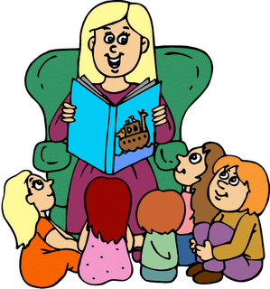
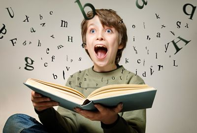
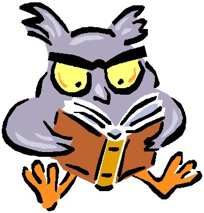
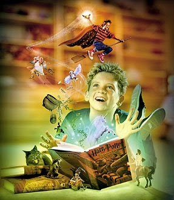

Qué es leer?
Leer es una comptencia básica, por lo tanto abre puertas a todas formas de aprendizaje personal y de crecimiento intelectual.


Leer es una comptencia básica, por lo tanto abre puertas a todas formas de aprendizaje personal y de crecimiento intelectual.
La compresión lectura es una representación significativa y personal de los símbolos verbales impresos que se justifican sólo en la medida en que el lector es capáza de comprender los significados que están a su disposición.
Es la que se practica cuando se articula el texto en voz alta.
Consiste en recibir mentalmente el mensaje escrito sin pronunciar palabras, siguiendo con la mirada las líneas del texto en silencio.
Consiste en leer de forma rápida para saber de que se trata un texto. Cuya finalidad es de captar la idea general de los contenidos fundamentales del texto, sin entrar en detalles.
Esta lectura permite buscar datos o aspectos muy específicos de interés para el lector, obviando el resto.
Es el tipo de lectura que realiza el lector que no queda tranquilo hasta estar seguro de haber entendido perfectamente todo el mensaje.
En este tipo de lectura mientras se lee, se produce una lluvia de ideas con riquezas de contenido que el lector va generando, organizando y relacionando.
Es la que se realiza cuando se analiza y evalúa la relevancia de lo que se lee lo que implica reconocer la verdad aparente del contenido del texto e identificar lo que posiblemente se oculta.
Es la usada cuando se lee un libro por placer, se suele realizar a velocidad que defina el lector y su propósito principal es entretenerse y dejar vola la imaginación.
Es la fase en la cual el lector elabora suposiciones a partir de los datos extraídos del texto.